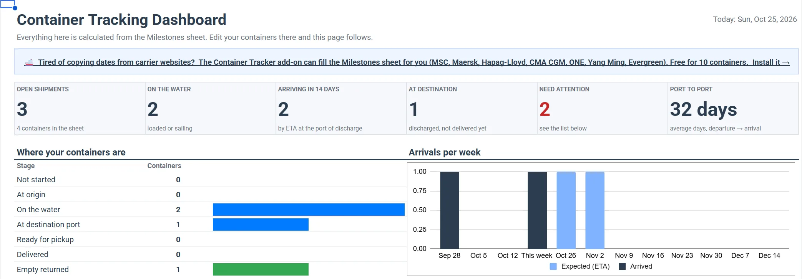
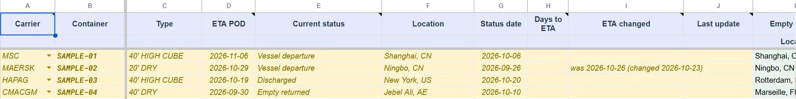

Free container tracking spreadsheet template
One row per container, the 10 milestones of an ocean shipment, ETAs, and a dashboard that shows what arrives next and which containers need a follow-up. Built for Google Sheets, free to copy.
Opens Google Sheets and saves your own copy to your Google Drive. You need a Google account.

What's inside
Milestones
Your data: carrier, container number, type, ETA, current status, and the place and date of each milestone. A carrier dropdown, date checks and a green trail across the milestones a container has reached.
Dashboard
Open shipments, on the water, arriving in 14 days, at the destination port, arrivals per week, a breakdown by carrier and port, and the lists Arriving next and Needs attention. It recalculates as you edit.
Start here
A one-page guide: how to fill the sheet, what each milestone means, and which containers the Dashboard flags.
How to use it
- Make a copy. The copy is yours: nobody else sees your containers.
- Delete the 4 sample rows in the Milestones sheet (yellow, containers SAMPLE-01 to SAMPLE-04). They are there so the Dashboard has something to show.
- Add your containers, one row each: carrier, container number, ETA, and the date and place of each milestone you know. Leave the rest empty.
- Open the Dashboard. See what arrives in the coming weeks and what needs a call today.

What "Needs attention" flags
- ETA passed, no arrival yet: the vessel should have arrived but there is no arrival or discharge date.
- At the destination port for 4+ days: check the free time before demurrage starts.
- ETA changed: the carrier moved the arrival date.
- No new event for 14+ days: not counted while the vessel is sailing, when long gaps are normal.
The 10 milestones
| Empty Container Dispatched | The empty container leaves the depot for loading at the shipper. |
| Received Full for Export | The loaded container is back at the terminal, ready for export. |
| Loaded on Vessel | Loaded onto the first ocean vessel. |
| Vessel Departure | The vessel leaves the port of loading. |
| Vessel Arrival | The vessel arrives at the port of discharge. |
| Discharged from Vessel | The container is unloaded at the port of discharge. |
| Available for Pickup | Customs and terminal release: it can be collected. |
| Import to Consignee | The container leaves the port towards the consignee. |
| Delivered to Consignee | Delivered to the consignee. |
| Empty Returned to Depot | The empty container is back at the carrier's depot. The trip is complete. |
Fill it with one click
Copying dates from carrier websites takes time. Container Tracker is a Google Sheets add-on that can fill this Milestones sheet for you:
- Add a container in the add-on by its number. The carrier is detected from the number.
- It reads milestones, ETA and status from the carrier (MSC, Maersk, Hapag-Lloyd, CMA CGM, ONE, Yang Ming, Evergreen) and checks again every few hours.
- Your sheet changes only when you click Update Milestones sheet in the add-on panel. One click refreshes all rows, and ETA changes are highlighted.
- Rows you typed yourself are kept. When the add-on tracks the same carrier and container, it updates that row instead of adding a new one.
- Free for your first 10 containers read from the carrier; more need a paid plan. Manual tracking for any carrier is always free.
After installing, open it from the Container Tracker icon in the right-hand side panel of Google Sheets (not the Extensions menu). Getting started guide
Questions
Is it free?
Yes. The spreadsheet is free to copy, use and share. The optional add-on is free for your first 10 containers read from the carrier.
Does it update container status by itself?
No. The Dashboard recalculates from what is in the Milestones sheet, but the milestone dates come from you: you type them, or the add-on writes them when you click Update Milestones sheet.
Can I use it in Excel?
It is built for Google Sheets. You can download it as .xlsx (File → Download), and the Milestones data comes across, but the Dashboard formulas are written for Google Sheets and may not work in Excel.
Can I add my own columns?
Yes, after the Notes and Reference columns. Don't insert, move or rename columns A to AD of the Milestones sheet: the Dashboard and the add-on rely on them.